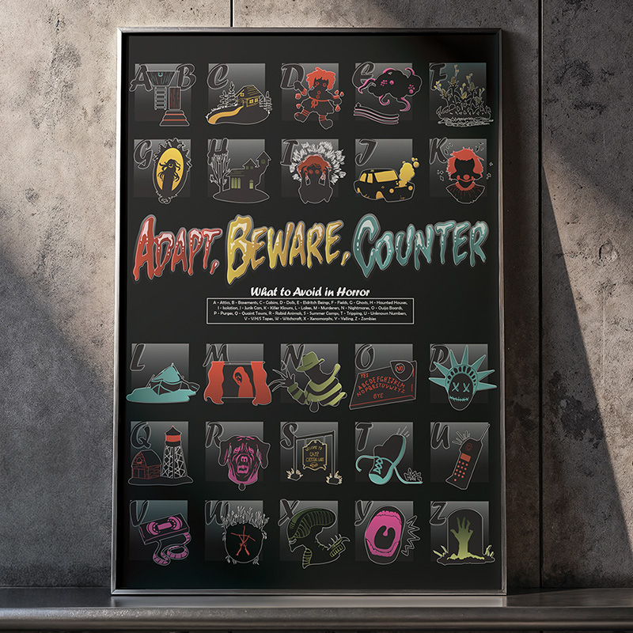
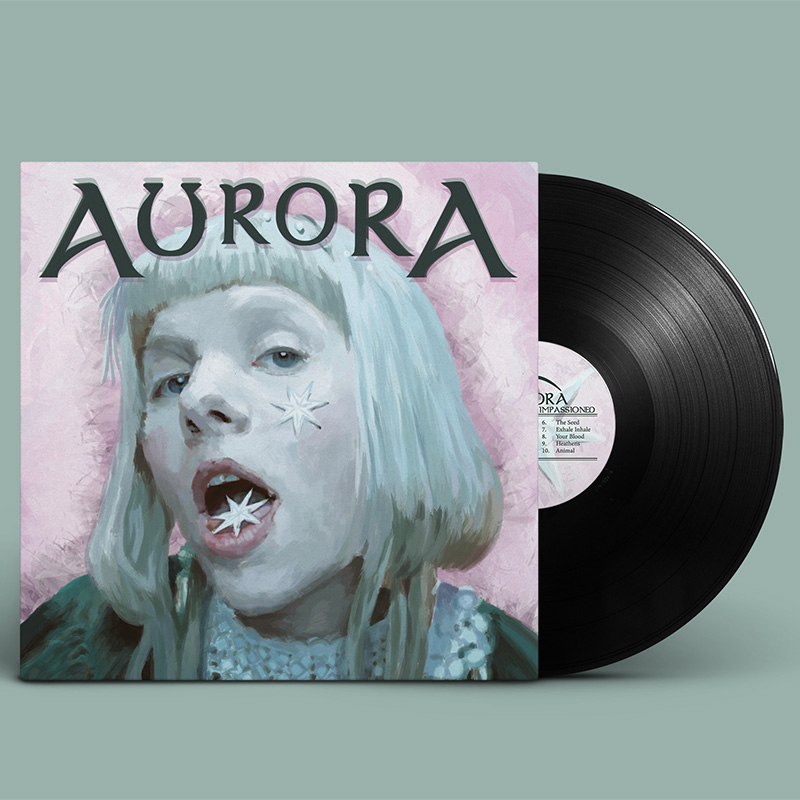
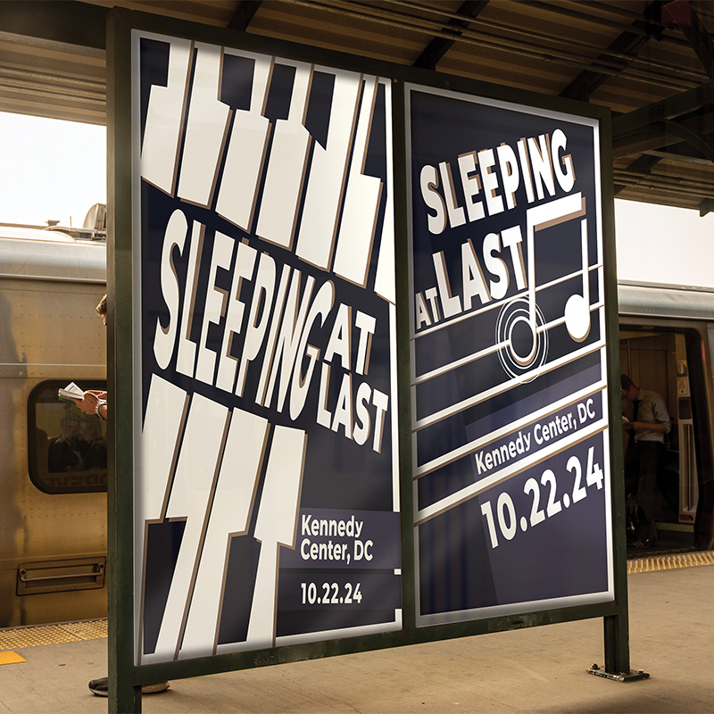
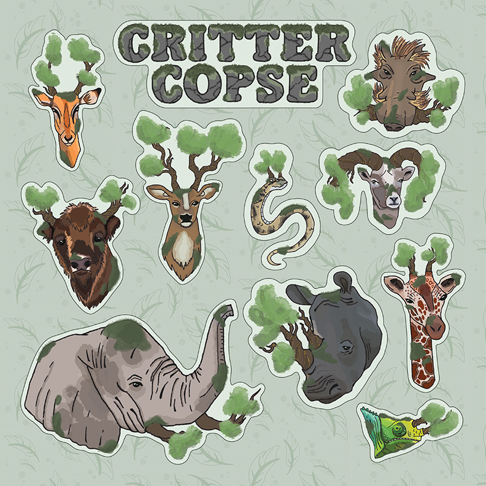
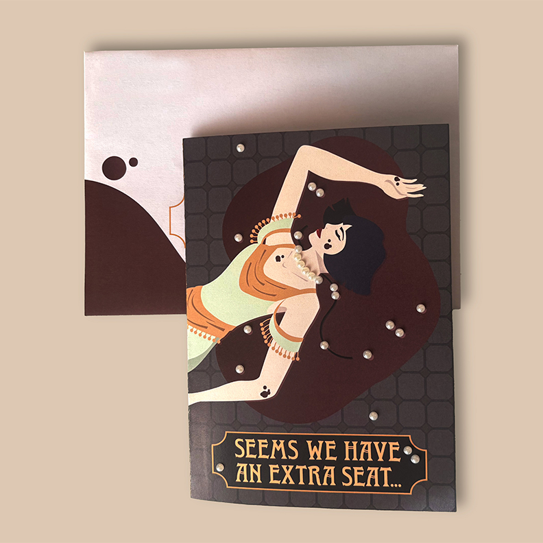
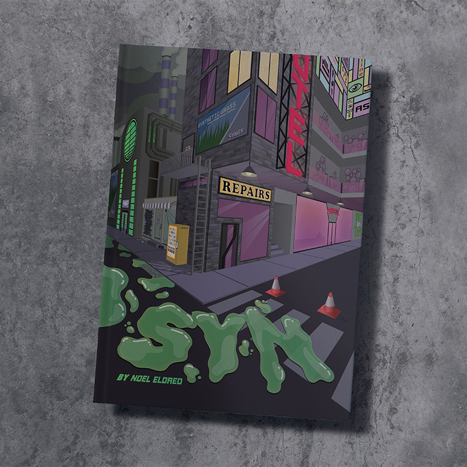
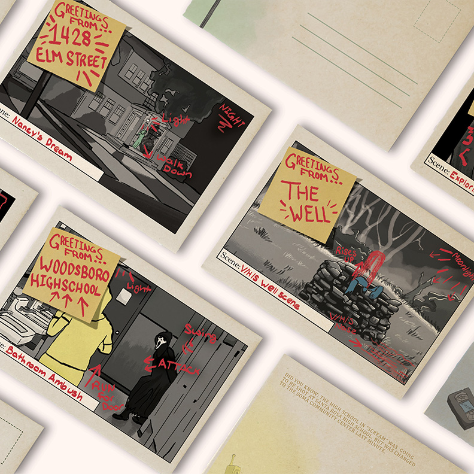
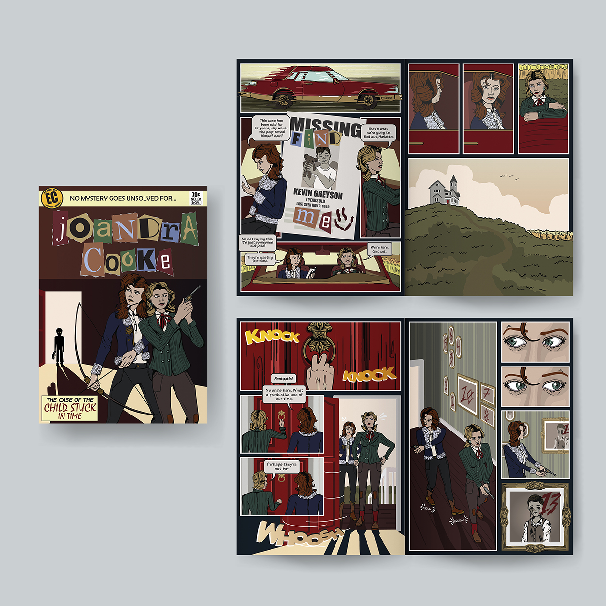

The heart of Stockpot Designs. Here you'll find some of my greatest projects from alphabet-based horror posters to mysterious comic books. This page showcases the style exploration at the core of Stockpot Designs.

This poster not only acts as the perfect wall art for horror enthusiasts, but as a reminder of the 26 things to avoid if you want to live.
The Adapt, Beware, Counter poster uses tiny pops of color on a dark background and an exact grid pattern to create rhythm so that you don’t
gloss over any need-to-know threats.
Programs: Adobe Illustrator

This piece was created by layering multiple Illustrator
files containing hand-painted sections of the singer, AURORA. It was an exploration
of opacities and color interaction to create an on brand and bold album cover.
Programs: Adobe Illustrator, Adobe Photoshop

Inspired by the works of Ernst Keller, the Sleeping at Last concert posters reflect the Swiss Design Style which keeps typography at the forefront.
The pale yellows on deep purples reflects the music that this band creates, that being soothing and packed with heartfelt lyrics.
Programs: Adobe Illustrator

The Critter Copse Sticker Sheet includes 10 depictions of horned animals around the world, of which there are shockingly
few. This sheet takes these beautiful creatures and turns them into a forest of tree horns.
Programs: Adobe Illustrator, Adobe Photoshop

An invitation card for a role playing murder mystery dinner party. Based off the glamor and drama of the 1930’s party scene, this card utilizes
the color-blocking art style, luxurious color scheme, and typography of the Art Deco period..
Programs: Adobe Illustrator

SYN is a made up graphic novel that tells the story of a near-dystopia where nature had been overrun and replaced with smog and neon signs.
This cover uses unnatural greens and a dark, cramped atmosphere to contrast the familiar open fields and clear skies of years past.
Programs: Adobe Illustrator

A set of four postcards based off the wildly famous horror films of the 20th century. The designs themselves are a twist on the
film industry, with well known scenes from the films being depicted as storyboards with handwritten annotations.
Programs: Adobe Photoshop

A decade in the making, this comic cover and spreads is inspired by Joandra Cooke, a detective story that my brother created and
shared with me at 10 years old. The character design, weapons, personalities, and plot points, while loosely based, pay homage to this memorable childhood story.
Programs: Adobe Illustrator, Adobe Photoshop